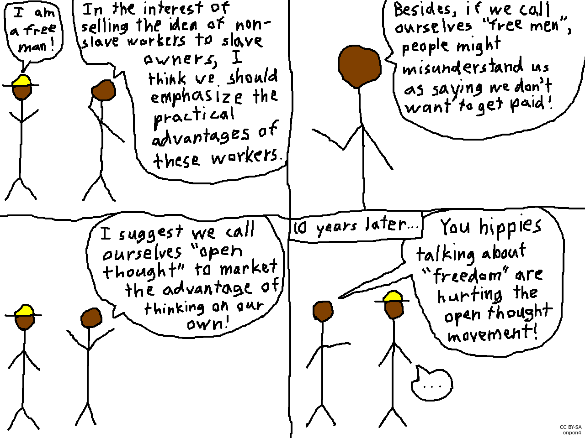

The Open Thought Movement
| Status: | Complete |
|---|---|
| Category: | Comics |
| License: | CC BY-SA 3.0 |
| Description: | A small, not very well-drawn comic about free software and open source. |

Transcript
Strawhat: "I am a free man!"
Rayman: "In the interest of selling the idea of non-slave workers to slave owners, I think we should emphasize the practical advantages of these workers."
Rayman: "Besides, if we call ourselves "free men", people might misunderstand us as saying we don't want to get paid!"
Rayman: "I suggest we call ourselves "open thought" to market the advantage of thinking on our own!"
10 years later...
Man: "You hippies talking about "freedom" are hurting the open thought movement!"
Strawhat: "..."